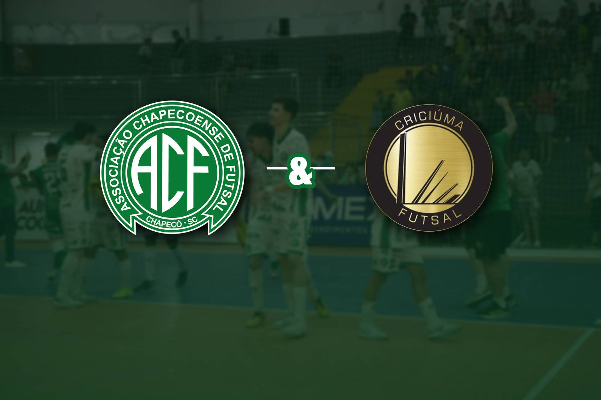

A união fora das quadras e o espírito de parceria marcaram os bastidores da Copa Sul 2026, com uma parceria envolvendo a Associação Chapecoense de Futsal e a Associação Criciúma de Futsal. Nesta semana, o clube do Sul do Estado agradeceu, oficialmente, o Verdão das Quadras, em virtude do suporte logístico oferecido durante a competição realizada na cidade de Xanxerê, entre 23 e 27 de setembro.
No ofício assinado pelo presidente Marcio Rodrigo Fernandes, a diretoria tricolor destacou o auxílio direto da equipe de Chapecó na viabilização do alojamento para a delegação. O Criciúma informou que a participação no torneio não estava prevista no planejamento financeiro da temporada, ocorrendo após a desistência do Joinville.
De acordo com o documento da ACF, a ajuda da Chape Futsal foi o fator determinante para garantir a presença do time na disputa. O documento do Criciúma também parabenizou a Chapecoense Futsal pela organização do evento e colocou a sua estrutura à disposição da agremiação verde-branca para compromissos futuros.
Reciprocidade
O presidente da Chapecoense Futsal, Clayton Tressoldi, manifestou-se sobre o recebimento do ofício e ressaltou a necessidade de cooperação institucional entre os clubes esportivos de Santa Catarina.
“O Criciúma tem um projeto semelhante ao nosso, com pessoas do bem e querendo fazer o bem. É isso que o esporte precisa, o futsal precisa. Agradecemos pelas parabenizações, e estendo também ao Criciúma pelo trabalho digno e respeitoso que fazem. A disputa é dentro de quadra entre os atletas, mas fora é preciso haver união entre os clubes”, declarou o dirigente. Na Copa Sul, a Chapecoense fez uma grande campanha e terminou com o vice-campeonato.

Confira o ofício
A ACF – Associação Criciúma de Futsal – vem por meio deste agradecer a Associação Chapecoense de Futsal pelo apoio e atenção que foi dado a nossa equipe por ocasião da participação na COPA SUL DE FUTSAL 2026, tanto durante a competição como no auxílio para alojamento de nossa equipe.
Informo que esta competição não estava em nossos planejamentos para o corrente ano, sendo disponibilizada após a desistência do JEC Futsal em disputa-la e isso trouxe um adendo no orçamento que não estava previsto e esta ajuda foi fundamental para nossa participação da competição.
A Associação Chapecoense de Futsal possui o mesmo espírito de camaradagem e ajuda mútua que norteiam nossa entidade na melhoria do futsal nacional.
Por fim, parabenizar a Associação Chapecoense de Futsal pela excelente competição organizada, digna dos melhores eventos envolvendo o futsal brasileiro e deixo a estrutura da Associação Criciúma de Futsal à disposição de sua equipe quando necessitar.
Sem mais para o momento.
Marcio Rodrigo Fernandes
Presidente ACF